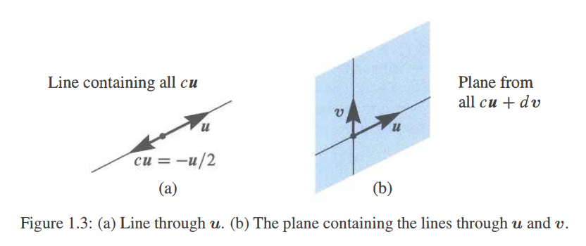

向量和线性组合
\(3\boldsymbol{v}+5\boldsymbol{w}\) 是向量 \(\boldsymbol{v}\) 和 \(\boldsymbol{w}\) 的一个典型 线性组合。
对于 \(\boldsymbol{v}=\begin{bmatrix} 1 \\ 2 \end{bmatrix}\) 和 \(\boldsymbol{w}=\begin{bmatrix} 2 \\ 3 \end{bmatrix}\) 其组合为 \(3\begin{bmatrix} 1 \\ 1 \end{bmatrix}+5\begin{bmatrix} 2 \\ 3 \end{bmatrix}=\begin{bmatrix}3+10\\3+15\end{bmatrix}=\begin{bmatrix}13\\18\end{bmatrix}\)。
向量 \(\begin{bmatrix}2\\3\end{bmatrix}=\begin{bmatrix}2\\0\end{bmatrix}+\begin{bmatrix}0\\3\end{bmatrix}\) 在 \(xy\) 平面上经过 \(x=2\) 和 \(y=3\)。
组合 \(c\begin{bmatrix}1\\1\end{bmatrix}+d\begin{bmatrix}2\\3\end{bmatrix}\) 填满整个 \(xy\) 平面。它们可以生成每一个 \(\begin{bmatrix}x\\y\end{bmatrix}\)。
组合 \(c\begin{bmatrix}1\\1\\1\end{bmatrix}+d\begin{bmatrix}2\\3\\4\end{bmatrix}\) 填满 \(xyz\) 空间的一个平面。同 \(\begin{bmatrix}1\\1\\1\end{bmatrix},\begin{bmatrix}3\\4\\5\end{bmatrix}\) 生成的平面相同。
但是 \(\begin{matrix}c+2d=1\\c+3d=0\\c+4d=0\end{matrix}\) 无解因为该方程右端 \(\begin{bmatrix}1\\0\\0\end{bmatrix}\) 不在该平面上。
"你不能将苹果与橘子相加。" 奇怪的是，这就是向量的原因。我们有两个独立的数 \(v_1\) 和 \(v_2\)。该数对给出一个 二维向量 \(\boldsymbol{v}\): \[ \textbf{列向量}\boldsymbol{v} \quad\quad \boldsymbol{v}=\begin{bmatrix}v_1\\v_2\end{bmatrix} \quad \begin{matrix}v_1=\boldsymbol{v}的第一个分量\\v_2=\boldsymbol{v}的第二个分量\end{matrix} \] 我们将 \(\boldsymbol{v}\) 写成 列 而不是行的形式。到目前为止的重点是用一个单独字母 \(\boldsymbol{v}\) (加粗斜体) 来表示数对 \(v_1\) 和 \(v_2\) (斜体)。
尽管我们不能将 \(v_1\) 和 \(v_2\) 相加，但我们会将 向量相加。\(\boldsymbol{v}\) 和 \(\boldsymbol{w}\) 的各个分量在加法中保持独立： \[ \begin{matrix}\textbf{向量}\\\textbf{加法}\end{matrix} \qquad \boldsymbol{v}=\begin{bmatrix}v_1\\v_2\end{bmatrix} \quad 和 \quad \boldsymbol{w}=\begin{bmatrix}w_1\\w_2\end{bmatrix} \quad 相加得到 \quad \boldsymbol{v}+\boldsymbol{w}=\begin{bmatrix}v_1+w_1\\v_2+w_2\end{bmatrix}. \] 减法遵循同样的规则：\(\boldsymbol{v}-\boldsymbol{w}\) 的分量分别是 \(v_1-w_1\) 和 \(v_2-w_2\)。
另一个基本的运算是 标量乘法。向量能与 2 或 -1 或任意数 \(c\) 相乘。为了得到 \(2 \boldsymbol{v}\)，令 \(\boldsymbol{v}\) 的每个分量乘 2 得到：
\[ \begin{matrix}\textbf{标量}\\\textbf{乘法}\end{matrix} \qquad 2 \boldsymbol{v}=\begin{bmatrix}2v_1\\2v_2\end{bmatrix}=\boldsymbol{v}+\boldsymbol{v} \quad -\boldsymbol{v}=\begin{bmatrix}-v_1\\-v_2\end{bmatrix}. \]
\(c \boldsymbol{v}\) 的分量为 \(cv_1\) 和 \(cv_2\)。\(c\) 被称为“标量”。
注意 \(-\boldsymbol{v}\) 和 \(\boldsymbol{v}\) 的和是零向量。记作 \(\mathbf{0}\)，与数字 0 不同！向量 \(\mathbf{0}\) 分量为 0 和 0。请原谅我反复强调向量与其分量之间的差异。线性代数建立在这些运算 \(\boldsymbol{v}+\boldsymbol{w}\) 和 \(c \boldsymbol{v}\) 和 \(d \boldsymbol{w}\) 之上——向量相加和标量相乘。
线性组合
现在我们组合加法和标量乘法得到 \(\boldsymbol{v}\) 和 \(\boldsymbol{w}\)的 “线性组合”。将 \(\boldsymbol{v}\) 乘 \(c\)，\(\boldsymbol{w}\) 乘 \(d\)然后相加得到 \(c \boldsymbol{v}+d \boldsymbol{w}\)。
\(c \boldsymbol{v}\) 和 \(d \boldsymbol{w}\) 的和是线性组合 \(c \boldsymbol{v}+d \boldsymbol{w}\)。
四个特别的线性组合分别是：求和，作差，乘零和标量相乘： \[ \begin{align} 1 \boldsymbol{v}+1 \boldsymbol{w}&=\text{sum of vectors in Figure 1.1a} \\ 1 \boldsymbol{v}-1 \boldsymbol{w}&=\text{difference of vectors in Figure 1.1b} \\ 0 \boldsymbol{v}+0 \boldsymbol{w}&=\textbf{zero vector} \\ c \boldsymbol{v}+0 \boldsymbol{w}&=\text{vector}\ c \boldsymbol{v}\ \text{in the direction of}\ \boldsymbol{v} \end{align} \]
零向量总是一个可能的线性组合 (它的系数为0)。每次我们得到一个向量的“空间”，都会包括零向量。这个大的视野，考虑 \(\boldsymbol{v}\) 和 \(\boldsymbol{w}\) 的所有线性组合，就是线性代数要做的事。
下面的图展示了你可以怎样可视化向量。对于代数而言，我们只需要分量 (比如 4 和 2)。那个向量 \(\boldsymbol{v}\) 被表示为一个箭头。该箭头在向右经过 \(v_1=4\) 个单位长度，向上通过 \(v_2=2\) 个单位长度。它最终止于一个点，其 \(x,y\) 坐标是 \(4,2\)。该点是这个向量的另一种表示——所以我们有三种方式去描述 \(\boldsymbol{v}\)：
\[向量\boldsymbol{v}的表示 \qquad 两个数字 \quad 始于 (0,0) 的箭头 \quad 平面上的点\]
相加使用数字。可视化 \(\boldsymbol{v}+\boldsymbol{w}\) 使用箭头：向量加法 (头尾相接)，在 \(\boldsymbol{v}\) 的终点放置 \(\boldsymbol{w}\) 的起点。

我们先沿着 \(\boldsymbol{v}\) 然后沿着 \(\boldsymbol{w}\) 行进。或者我们沿着对角线 \(\boldsymbol{v}+\boldsymbol{w}\) 走捷径。当然我们也可以先沿着 \(\boldsymbol{w}\) 再沿着 \(\boldsymbol{v}\)。换句话说，\(\boldsymbol{w}+\boldsymbol{v}\) 给出与 \(\boldsymbol{v}+\boldsymbol{w}\) 相同的答案。这些是沿着平行四边形的不同方式（在这个例子中它是一个矩形）。
三维向量
有两个分量的向量关联到 \(xy\) 平面的一个点。\(\boldsymbol{v}\) 的分量为该点的坐标：\(x=v_1\) 和 \(y=v_2\)。当从 \((0,0)\) 出发时，箭头终于点 \((v_1,v_2)\)。现在允许向量有三个分量 \(v_1,v_2,v_3\)。
\(xy\) 平面被三维 \(xyz\) 平面取代。下面是一些经典的向量 (仍然是列向量但有三个分量)：
\[ \boldsymbol{v}=\begin{bmatrix}1\\1\\-1\end{bmatrix}\quad 和 \quad \boldsymbol{w}=\begin{bmatrix}2\\3\\4\end{bmatrix}\quad 和 \quad \boldsymbol{v}+\boldsymbol{w}=\begin{bmatrix}3\\4\\3\end{bmatrix}. \]
向量 \(\boldsymbol{v}\) 关联到三维空间的一个箭头。通常该箭头始于“原点”，\(xyz\) 轴交于该点且坐标为 \((0,0,0)\)。箭头终于坐标为 \(v_1,v_2,v_3\) 的点。在 列向量 和 始于原点的箭头 和 箭头终止的点 这三者之间有一个完美的对应。
平面中的向量 \((x,y)\) 与三维空间 \((x,y,0)\) 是不同的！

从现在开始 \(\boldsymbol{v}=\begin{bmatrix}1\\1\\-1\end{bmatrix}\) 也可以写成 \(\boldsymbol{v}=(1,1,-1)\)。
为了节省空间，将向量表示为行的形式 (位于括号中)。但是 \(\boldsymbol{v}=(1,1,-1)\) 不是行向量！它毫无疑问是列向量，只是暂时躺平了。行向量 \(\begin{bmatrix}1&1&-1\end{bmatrix}\) 是完全不同的概念，尽管它有相同的三个分量。这个 \(1\times3\) 行向量是 \(3\times1\) 列向量 \(\boldsymbol{v}\) 的“转置”。
在三维情况下，\(\boldsymbol{v}+\boldsymbol{w}\) 仍然一次计算一个分量。此时向量和有分量 \(v_1+w_1\)，\(v_2+w_2\) 和 \(v_3+w_3\)。向量加法在 4 或 5 或者 \(n\) 维上与此类似。当 \(\boldsymbol{w}\) 起始于 \(\boldsymbol{v}\) 的终点时，第三条边就是 \(\boldsymbol{v}+\boldsymbol{w}\)。另一个方式是沿着平行四边形得到 \(\boldsymbol{v}+\boldsymbol{w}\)。问：这四条边是否位于同一平面吗？是。并且和 \(\boldsymbol{v}+\boldsymbol{w}-\boldsymbol{v}-\boldsymbol{w}\) 围绕一圈产生零向量。
三维空间中三个向量的线性组合的例子为 \(\boldsymbol{u}+4\boldsymbol{v}-2\boldsymbol{w}\)：
\( \begin{matrix} \text{Linear combination}\\ \text{Multiply by 1,4,-2}\\ \text{Then add} \end{matrix} \qquad \qquad \begin{bmatrix} 1\\0\\3 \end{bmatrix}+ 4\begin{bmatrix} 1\\2\\1 \end{bmatrix}- 2\begin{bmatrix} 2\\3\\-1 \end{bmatrix}= \begin{bmatrix} 1\\2\\9\end{bmatrix}. \)
几个重要问题
对于单个向量 \(\boldsymbol{u}\)，唯一可能线性组合是向量乘法 \(c \boldsymbol{u}\)。对于两个向量，其组合为 \(c \boldsymbol{u}+d \boldsymbol{v}\)。对于三个向量，线性组合为 \(c \boldsymbol{u}+d \boldsymbol{v}+ e \boldsymbol{w}\)。你能从 一个 线性组合迈向 所有线性组合 吗？即任意的 \(c\), \(d\) 和 \(e\)。假设向量 \(\boldsymbol{u}\)，\(\boldsymbol{v}\)，\(\boldsymbol{w}\) 都位于三维空间：
- \(c \boldsymbol{u}\) 的所有组合的图像是怎样的？
- \(c \boldsymbol{u}+d \boldsymbol{v}\) 的所有组合的图像是怎样的？
- \(c \boldsymbol{u}+d \boldsymbol{v}+e \boldsymbol{w}\) 的所有组合的图像是怎样的？
答案取决于 \(\boldsymbol{u}\)，\(\boldsymbol{v}\) 和 \(\boldsymbol{w}\) 的具体取值。如果均为零向量 (一个十分极端的情况)，那每个组合都将是零。如果它们是非零向量 (分量随机取值)，则有三个可能的答案。这是我们学科的关键：
- \(c \boldsymbol{u}\) 的所有组合均位于一条 经过 \((0,0,0)\) 的直线。
- \(c \boldsymbol{u}+d \boldsymbol{v}\) 的所有组合填满 包含 \((0,0,0)\) 的平面。
- \(c \boldsymbol{u}+d \boldsymbol{v}+e \boldsymbol{w}\) 的所有组合填满 整个三维空间。
零向量 \((0,0,0)\) 位于直线上是因为 \(c\) 可以取零。位于平面上是因为 \(c\) 和 \(d\) 可以同时取零。向量 \(c \boldsymbol{u}\) 的直线无限长 (前向和后向)。对于 \(c \boldsymbol{u}+d \boldsymbol{v}\)(在三维空间中组合两个向量) 的平面则要求你自己仔细思考。
将一条线上的所有向量 \(c \boldsymbol{v}\) 同另一条线上的所有向量 \(d \boldsymbol{v}\) 相加能填满 Figure 1.3 的平面。
当包含第三个向量 \(\boldsymbol{w}\) 时，\(e \boldsymbol{w}\) 给定第三条线。假设第三条线不在 \(\boldsymbol{u}\) 和 \(\boldsymbol{v}\) 的平面中。那么将所有 \(c \boldsymbol{u}+d \boldsymbol{v}\) 与所有 \(e \boldsymbol{w}\) 组合将会填满整个三维空间。
这是典型的情况！从 直线 到 平面 再到 空间。但是还存在其他的可能性。当 \(\boldsymbol{w}\) 恰好为 \(c \boldsymbol{u}+d \boldsymbol{v}\) 时，第三个向量 \(\boldsymbol{w}\) 就位于前两个向量的平面中。此时 \(\boldsymbol{u},\boldsymbol{v},\boldsymbol{w}\) 的线性组合将不会超出 \(\boldsymbol{u}\boldsymbol{v}\) 平面。我们将不能得到整个三维空间。请在问题 1 中思考这个特殊情况。

关键思想回顾
- 二维空间中的向量 \(\boldsymbol{v}\) 有两个分量 \(v_1\) 和 \(v_2\)。
- \(\boldsymbol{v}+\boldsymbol{w}=(v_1+w_1,v_2+w_2)\) 和 \(c \boldsymbol{v}=(cv_1,cv_2)\) 均按分量分别计算得到。
- 三个向量 \(\boldsymbol{u}\)，\(\boldsymbol{v}\) 和 \(\boldsymbol{w}\) 的一个线性组合为 \(c \boldsymbol{u}+d \boldsymbol{v}+e \boldsymbol{w}\)。
- 取 \(\boldsymbol{u}\) 或 \(\boldsymbol{u}\) 和 \(\boldsymbol{v}\) 或 \(\boldsymbol{u}\)，\(\boldsymbol{v}\) 和 \(\boldsymbol{w}\) 的所有线性组合。在三维情况下，这些组合一般分别填满一条直线，一个平面和整个空间 \(\mathbf{R}^3\)。
典型示例
1.1 A
\(\boldsymbol{v}=(1,1,0)\) 和 \(\boldsymbol{w}=(0,1,1)\) 的线性组合填充 \(\mathbf{R}^3\) 的一个平面。描述该平面。请给出一个不是 \(\boldsymbol{v}\) 和 \(\boldsymbol{w}\) 线性组合的向量——其不在平面上。
解
\(\boldsymbol{v}\) 和 \(\boldsymbol{w}\) 的平面包含所有的线性组合 \(c \boldsymbol{v}+d \boldsymbol{w}\)。位于该平面上的向量允许任意的 \(c\) 和 \(d\)。Figure 1.3 的平面由两条线所填充。
线性组合 \(c \boldsymbol{v}+d \boldsymbol{w}=c \begin{bmatrix}1\\1\\0\end{bmatrix}+d \begin{bmatrix}0\\1\\1\end{bmatrix}=\begin{bmatrix}c\\c+d\\d\end{bmatrix}\) 填满一个平面。
位于该平面上的四个向量分别为 \((0,0,0)\)，\((2,3,1)\)，\((5,7,2)\) 和 \((\pi, 2\pi, \pi)\)。第二个分量 \(c+d\) 总是第一个和第三个分量的和。和大多数向量一样，\((1,2,3)\) 不 在该平面上，因为 \(2 \not =1+3\)。
关于这个经过 \((0,0,0)\) 的平面的另一个描述方式是知道 \(\boldsymbol{n}=(1,-1,1)\) 垂直于 这个平面。1.2 节将会通过点积证明这个 \(90^{\circ}\) 角：\(\boldsymbol{v}\cdot \boldsymbol{n}=0\) 和 \(\boldsymbol{w}\cdot \boldsymbol{n}=0\)。相互垂直的向量点积为零。
1.1 B
对于 \(\boldsymbol{v}=(1,0)\) 和 \(\boldsymbol{w}=(0,1)\)，通过 \((1)\) 全体数 \(c\) \((2)\) 非负数 \(c \geq 0\) 描述所有的点 \(c \boldsymbol{v}\)。然后加上所有的向量 \(d \boldsymbol{w}\) 描述所有的 \(c \boldsymbol{v}+d \boldsymbol{w}\)。
解
\((1)\) \(c\) 取全体数的向量 \(c \boldsymbol{v}=(c,0)\) 等价于 \(x\) 轴上一系列的点 (沿 \(\boldsymbol{v}\) 的方向)。包括 \((-2,0),(-1,0),(0,0),(1,0),(2,0)\)。
\((2)\) \(c \geq 0\) 时向量 \(c \boldsymbol{v}\) 覆盖 半线，即 \(x\) 正半轴。这条半线始于 \((0,0)\)，此时 \(c=0\)。包括 \((100,0)\) 和 \((\pi,0)\) 但不包括 \((-100,0)\)。
\((1^{\prime})\) 添加所有向量 \(d \boldsymbol{w}=(0,d)\) 得到一条垂直于所有点 \(c \boldsymbol{v}\) 的线。我们还有无穷多 平行线，取 (全体数 \(c\)，任意数 \(d\))。
\((2^{\prime})\) 添加所有向量 \(d \boldsymbol{w}=(0,d)\) 得到一条垂直于位于半线上的 \(c \boldsymbol{v}\) 的线。现在我们得到一个 半平面。\(xy\) 平面右半部分有 \(x\geq0\) 和 所有 \(y\)。
1.1 C
找出两个关于 \(c\) 和 \(d\) 的方程满足 线性组合 \(c \boldsymbol{v}+d \boldsymbol{w}\) 等于 \(b\)：
\[
\boldsymbol{v} = \begin{bmatrix}2\\-1\end{bmatrix} \quad
\boldsymbol{w} = \begin{bmatrix}-1\\2\end{bmatrix} \quad
\boldsymbol{b} = \begin{bmatrix}1\\0\end{bmatrix}.
\]
解
在应用数学中，许多问题分为两部分：
- 建模部分： 用一系列的方程表述问题。
- 计算部分： 通过快速和准确的算法解上述方程。
这里只要求第一部分 (方程)。第 2 章专门介绍第二部分 (解)。我们的示例适合线性代数的基本模型：
找到 \(n\) 个数 \(c_1,\ldots,c_n\) 满足 \(c_1 \boldsymbol{v}_1+\ldots+c_n \boldsymbol{v}_n=\boldsymbol{b}\).
当 \(n=2\) 时我们会找到一个关于 \(\boldsymbol{c}\) 的公式。第 2 章的“消除法” 能应用远大于 \(n=1000\) 的情况。对于超过 10 亿的 \(n\) 的情况，参见第 11 章。这里 \(n=2\)：
\( \begin{matrix}\textbf{向量方程}\\c \boldsymbol{v}+d \boldsymbol{w}=\boldsymbol{b}\end{matrix} \qquad \qquad c \begin{bmatrix}2\\-1\end{bmatrix}+d \begin{bmatrix}-1\\2\end{bmatrix}=\begin{bmatrix}1\\0\end{bmatrix} \)
所要求的关于 \(c\) 和 \(d\) 的方程分别来自于两个分量：
\[\textbf{两个普通方程}\qquad \qquad \begin{bmatrix}2c-d=1\\-c+2d=0\end{bmatrix}\]
每个方程得到一条直线。两直线在解 \(c=\frac 23,d=\frac 13\) 相交。为什么不将其看作一个 矩阵方程，这样将得到：
\[
\textbf{2}\times\textbf{2 矩阵} \qquad \begin{bmatrix}2&-1\\-1&2\end{bmatrix} \begin{bmatrix}c\\d\end{bmatrix}=\begin{bmatrix}1\\0\end{bmatrix}.\]